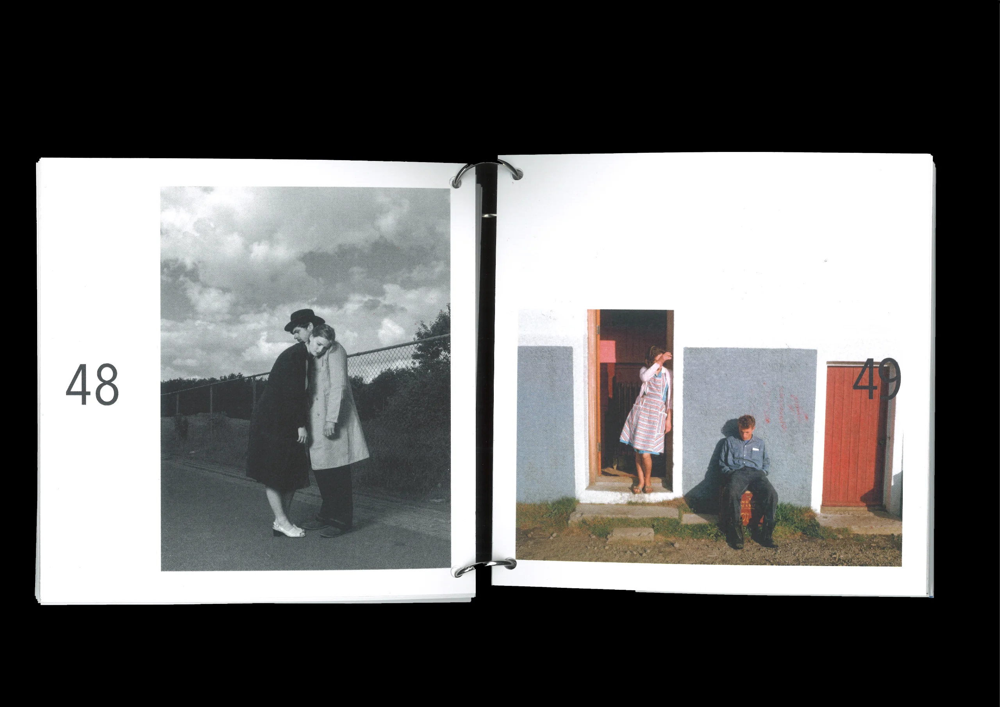
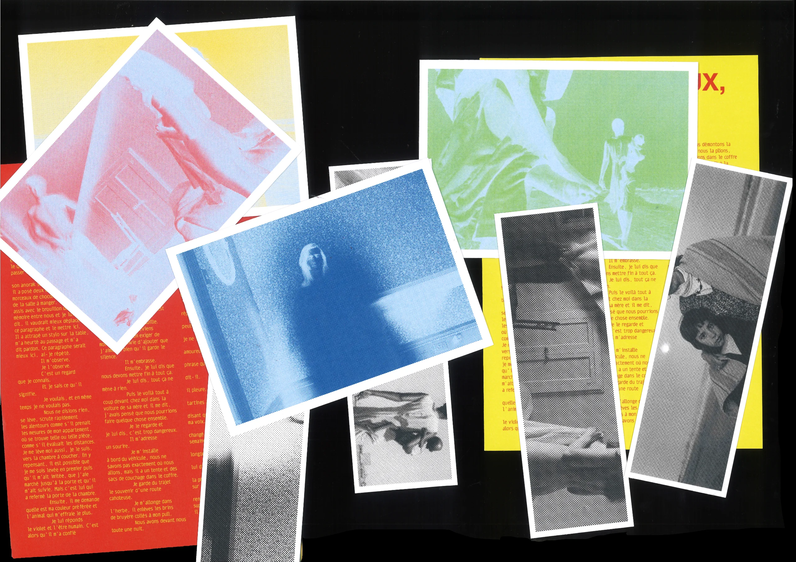
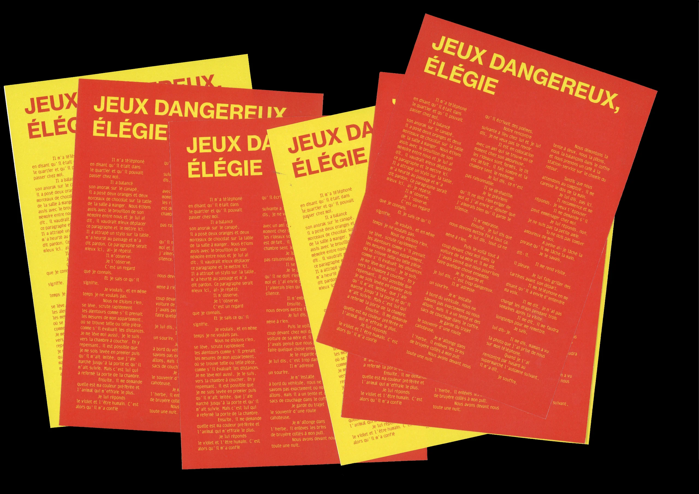
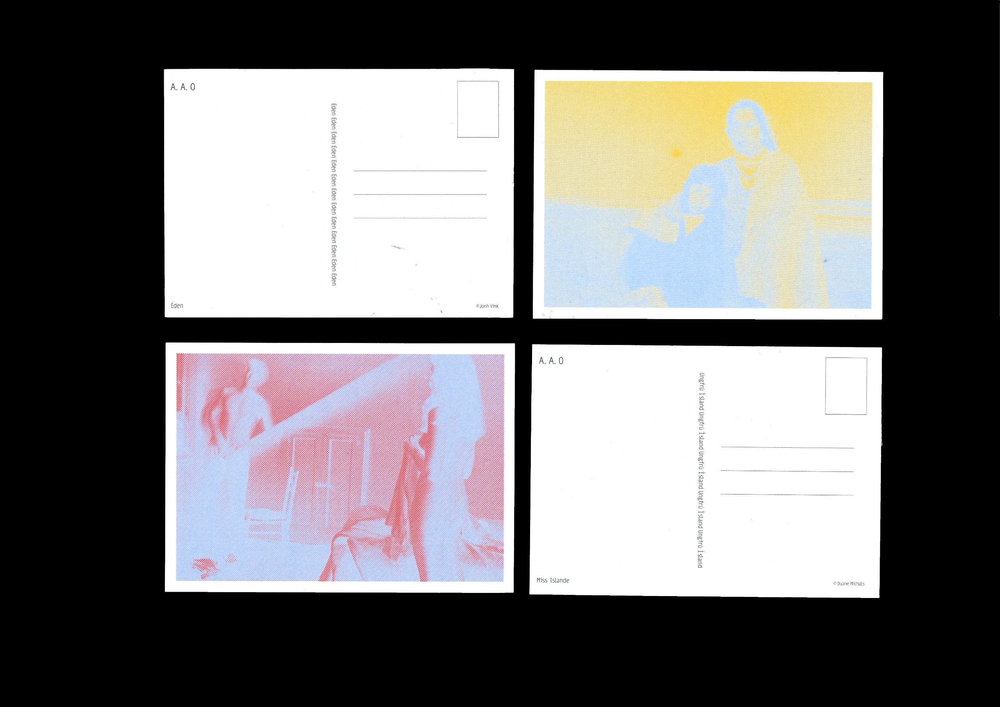
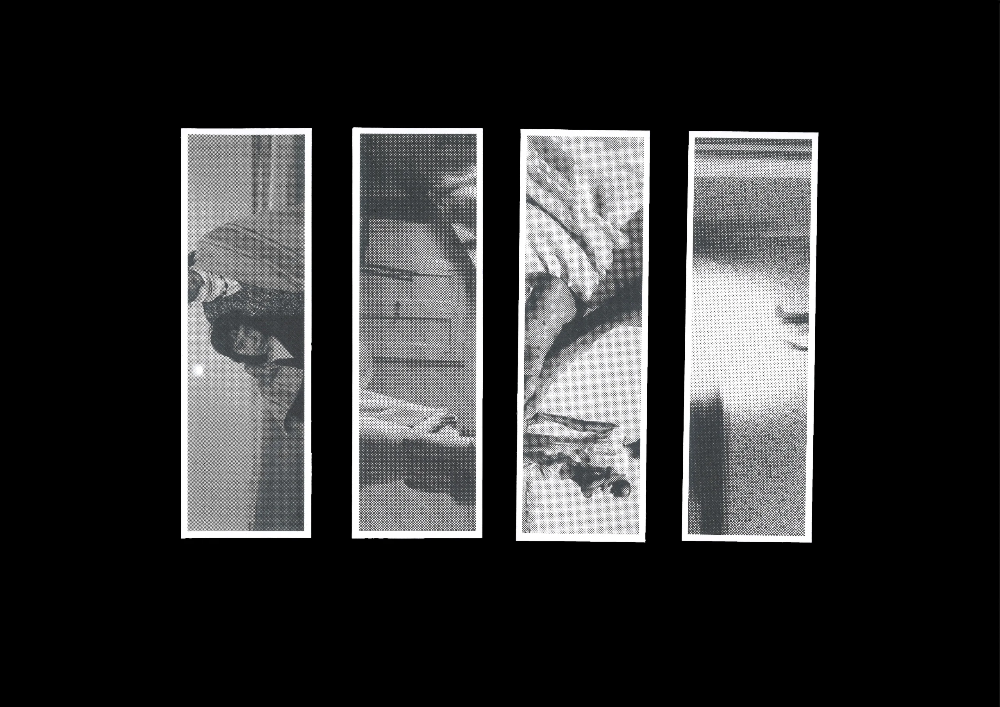
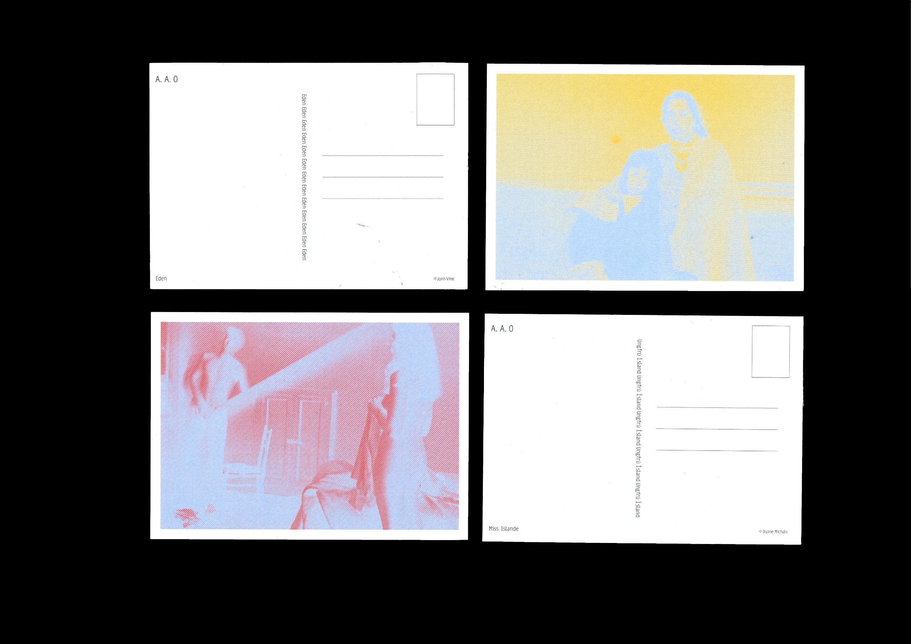
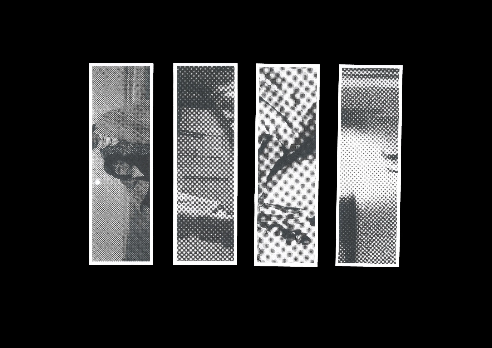

A.A.O in a nutshell
2024
Comment créer, uniquement à l’aide de ressources textuelles, des objets graphiques et éditoriaux?
C’était là mon défi sur ce projet. Réussir à mettre en lumière le travail sublime et poétique de l’autrice islandaise Audur Ava Ólafsdóttir à travers un coffret éditorial tout en préservant ses intentions et sans dénaturer son discours.
En croisant mes références, et en mettant en parallèle quatre de ses romans avec des photographes contemporains (ou non), est né "Audur Ava Ólafsdóttir in a nutshell", un coffret épuré et réfléchi qui aspire à donner une matérialité à cet univers si particulier.



 


